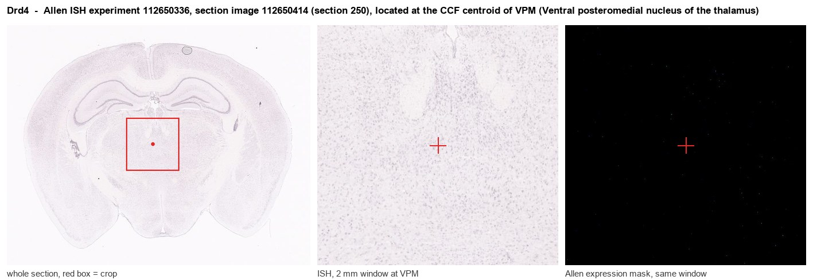
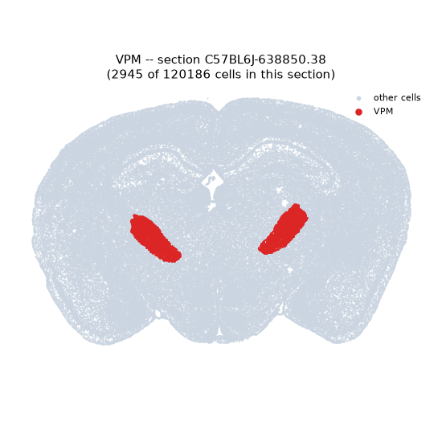
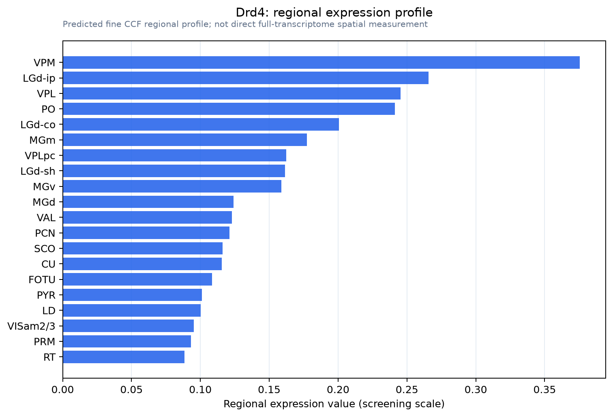

Drd4
D(4) dopamine receptor (D(2C) dopamine receptor) (Dopamine D4 receptor)
Spatial tier: RESTRICTED · Class: GPCR · Top region: VPM (Ventral posteromedial nucleus of the thalamus) · Positive regions: 19/554
46.0Discovery Score
36.0Targetability Score
CEvidence grade C
What this means: Drd4: fine CCF profile is restricted toward VPM (top regions: VPM, LGd-ip, VPL, PO, LGd-co; 19 positive regions); direct spatial validation is still required.
Function in VPM: evidence, prediction, innovation
- Gene function
- Drd4 encodes the D4 dopamine receptor, a Gi/Go-coupled D2-like receptor that inhibits adenylate cyclase, opens GIRK channels and closes voltage-gated calcium channels, damping excitability and transmitter release. Its third intracellular loop carries an unusually polymorphic repeat in humans, linked to ADHD and novelty seeking, and it binds the atypical antipsychotic clozapine with high affinity.
- Region function
- The ventral posteromedial nucleus is the somatosensory relay of the thalamus; its barreloids receive whisker input over the trigeminal lemniscal pathway and project to layer 4 of barrel cortex, gating tactile signals under inhibitory control from the thalamic reticular nucleus.
- Published in this region
- expression only Expression in thalamus is documented but function has been demonstrated in the adjacent reticular nucleus rather than in VPM itself. Primus 1997 localised D4-selective [3H]NGD 94-1 binding sites and Ariano 1997 mapped D4 protein across rat CNS, both including thalamus. Functionally, Govindaiah 2010 showed in pallido-thalamic slices that presynaptic D4 receptors selectively suppress GABA release from globus pallidus afferents onto thalamic reticular neurons while sparing intra-reticular collaterals, and Vaughn 2025 found D1, D2 and D4 receptors modulate electrical synapses and excitability in the reticular nucleus.
- Predicted function
- Prediction: in VPM the most plausible role for D4 is presynaptic and inhibitory, with Gi-coupled suppression of GABA release from reticular terminals and of glutamate release from corticothalamic feedback. That would disinhibit relay cells and raise the fidelity of whisker signals during high-dopamine states such as arousal and salience. Local PD168077 is predicted to reduce reticular-evoked IPSCs in VPM and increase sensory-evoked relay firing, whereas the antagonist L-745,870 or a Drd4 knockout should deepen reticular inhibition, increase burst firing and spindle activity, and blunt whisker-detection performance.
- Innovation
- ★★★★☆ 4/5 Presynaptic D4 modulation is established in the reticular nucleus but has never been tested on the relay neurons it inhibits, despite selective agonists and antagonists being available.
- Tools
- Drd4 knockout mice and Drd4-Cre BAC lines (GENSAT); selective agonists PD168077 and A-412997; antagonists L-745,870 and L-741,742; anti-D4 antibodies, generally poorly validated; VPM accessible by retro-AAV from barrel cortex, and the reticular nucleus with Pvalb-IRES-Cre (JAX 017320).
- References
Direct evidence located at the region

Allen ISH experiment 112650336, section image 112650414 (section 250): the section that contains the CCF centroid of Ventral posteromedial nucleus of the thalamus according to the Allen image-to-atlas alignment (reference_to_image), with a 2 mm window around that point. Left: whole section, red box = window. Middle: ISH signal. Right: Allen's expression-mask view of the same window. open this image in the Allen viewer
Look it up yourself: Allen Mouse Brain ISH for Drd4Allen reference atlas: VPM (structure 733)ABC Atlas MERFISH viewer(in the ABC Atlas choose dataset MERFISH-C57BL6J-638850-CCF, colour cells by gene "Drd4" or by parcellation_substructure "VPM")All genes confined to VPM + 3-D brain
Direct spatial evidence
MERFISH REGION LOCATOR

Regional expression figure

Predicted WMB × fine-CCF profile; not direct full-transcriptome spatial measurement.
Spatial profile
Evidence and specificity
- Evidence status
- PREDICTED_FINE
- Direct sources
- None; predicted localization only
- Exclusive threshold
- 12 positive regions out of 554
- Spatial specificity
- 0.307
- Top-region fraction
- 0.059
- Filter status
- PASS
Interpretation limits
- Cell-type-to-region projection is imputed expression, not direct spatial measurement.
- Adult reference atlases do not establish stability across age, sex, strain, state, or disease.
- Transcript abundance does not guarantee protein abundance or genetic-tool performance.